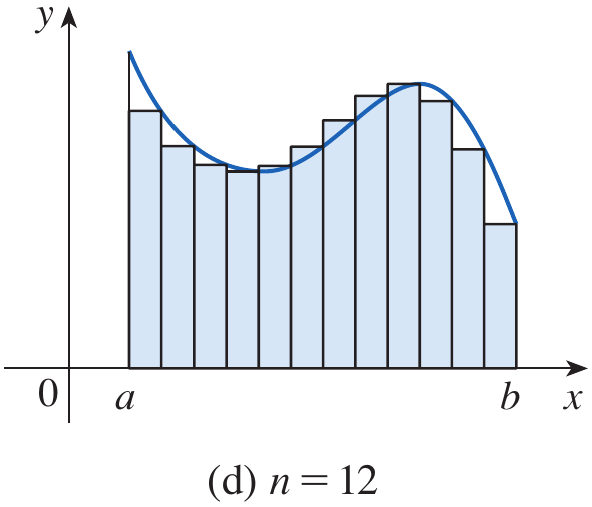
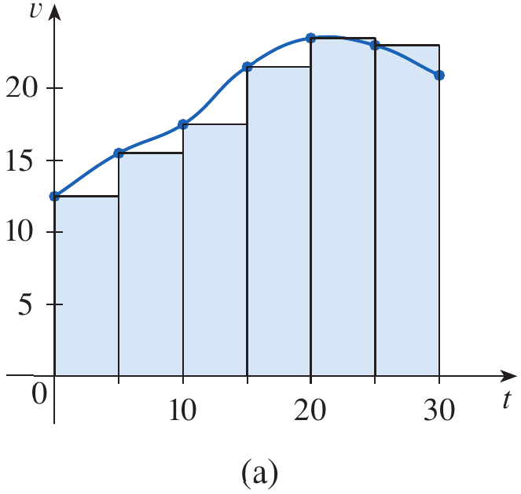
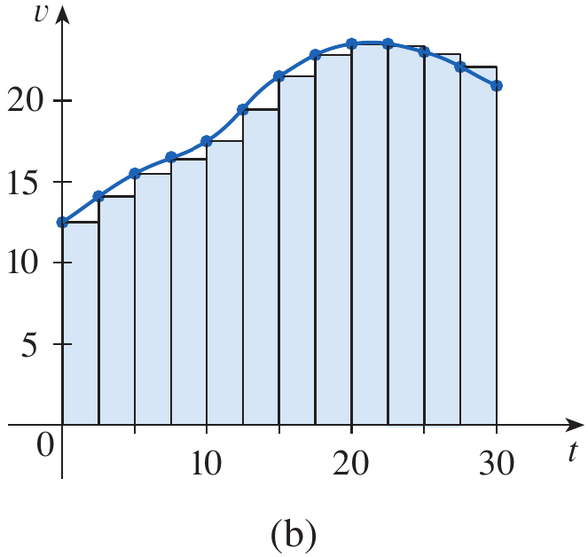
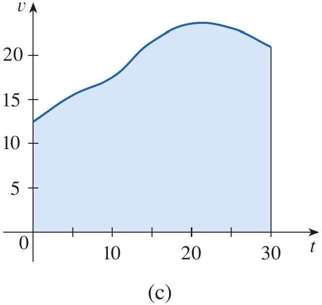

Calculus and Analytical
Geometry
The Area and Distance
Problems
Dr. Aamir Alaud Din
Objectives
After preparing this topic, you should be able
- To explain the area problem and represent the region under a
nonnegative continuous function on a closed interval.
- To approximate the area under a curve by using rectangles
constructed from equal-width subintervals and left or right
endpoints.
- To express the limiting area of a region as a limit of Riemann sums
and use sigma notation to represent the sums compactly.
- To estimate the distance traveled by an object from discrete
velocity readings using left-endpoint and right-endpoint sums.
- To explain how increasingly frequent measurements lead to the area
under a velocity-time graph and the exact distance traveled.
The Why Section
- In engineering and computing, many important quantities are
accumulated continuously rather than obtained from a single
measurement.
- The area problem provides a mathematical method for finding the
total amount represented by a varying function, even when the boundary
is curved and ordinary geometric formulas are not sufficient.
- The central idea is to divide an interval into small pieces,
approximate the contribution from each piece, add these contributions,
and improve the estimate by making the pieces narrower.
- For a region under a graph, each rectangular contribution is
approximately its height multiplied by its width. The limit of the
resulting sums gives the exact area when the function is
continuous.
- The same mathematical structure appears in the distance problem. If
velocity varies with time, multiplying one velocity reading by a time
interval estimates the distance traveled during that interval.
- These ideas are useful in mechanical engineering when estimating the
distance traveled by a robot, a moving vehicle, or a machine component
whose velocity changes with time.
- They are also useful in computer science and data science when
numerical data are sampled at discrete times and a total quantity must
be estimated from those samples.
- For example, a mechatronic robot may record its velocity every few
seconds. By adding the approximate distances traveled during the
successive intervals, we can estimate its total travel distance.
Studying the area and distance problems provides the mathematical
foundation for solving this type of task.
The Area Problem
Understanding the Area
Problem
- The area problem is to find the area of the region that lies under
the graph of a function y=f(x) from
x=a to x=b.
- In the standard setting, the function is continuous and nonnegative
on [a,b]. The region is bounded by the
graph, the x-axis, and the vertical
lines x=a and x=b.
- When a region has straight sides, its area can often be calculated
using familiar geometric formulas. A curved boundary requires a
different approach.
- The basic idea is to approximate the region by rectangles, calculate
the sum of their areas, and then improve the approximation by increasing
the number of rectangles.

Figure 1. The region S under the graph of y=f(x) from x=a to x=b.
- For a rectangle, the area is its length multiplied by its width. For
a triangle, the area is one-half the base multiplied by the height. A
polygon can be divided into triangles, and its area can be found by
adding their areas.
- These formulas suggest that a curved region may be approximated by
simpler regions whose areas are easy to calculate.

Figure 2. Areas of a rectangle, a triangle,
and a polygon divided into triangles.
Approximating Area with
Rectangles
- Consider the region under the parabola y=x^2 from x=0 to x=1.
The region lies inside a square of side length 1, so its area is between 0 and 1.
- Divide the interval [0,1] into four
equal subintervals, each of width \Delta
x=\frac14.
- On each subinterval, approximate the curved region by a rectangle.
The height of a rectangle can be chosen from the function value at the
left or right endpoint of its subinterval.
- Since f(x)=x^2 is increasing on
[0,1], right-endpoint rectangles lie
above the curve and give an overestimate, while left-endpoint rectangles
lie below the curve and give an underestimate.

Figure 3. The region under the parabola y=x^2 from x=0 to x=1.

Figure 4. Four strips under y=x^2 and their right-endpoint rectangular
approximations.
- Using right endpoints \frac14,\frac12,\frac34,1, the rectangle
heights are \left(\frac14\right)^2,\left(\frac12\right)^2,\left(\frac34\right)^2,1^2.
- The right-endpoint sum is therefore
R_4=\frac14\left(\frac14\right)^2+\frac14\left(\frac12\right)^2+\frac14\left(\frac34\right)^2+\frac14(1)^2
=\frac{15}{32}=0.46875
- Thus, the true area A is less than
0.46875.
- Using left endpoints 0,\frac14,\frac12,\frac34, the left-endpoint
sum is
L_4=\frac14(0)^2+\frac14\left(\frac14\right)^2+\frac14\left(\frac12\right)^2+\frac14\left(\frac34\right)^2
=\frac{7}{32}=0.21875
- Thus, the true area is greater than 0.21875, giving the bounds
0.21875<A<0.46875

Figure 5. Left-endpoint rectangles under y=x^2.
- Increasing the number of rectangles generally improves these
estimates. With eight equal subintervals, the left- and right-endpoint
sums provide the bounds
0.2734375<A<0.3984375

Figure 6. Approximations to the area under
y=x^2 using eight rectangles and left
or right endpoints.
- For this example, the left-endpoint sums increase toward the area,
while the right-endpoint sums decrease toward it. The two estimates
become closer as the number of rectangles increases.
- For example, with n=1000
rectangles, the left and right sums are approximately 0.3328335 and 0.3338335. The area is therefore
approximately 0.3333335, which is close
to \frac13.
Example 1
Use rectangles to estimate the area under the parabola y=x^2 from 0
to 1.
Solution
Divide [0,1] into four equal
subintervals. The width of each rectangle is
\Delta x=\frac{1-0}{4}=\frac14
Using right endpoints, the sum of the rectangle areas is
R_4=\frac14\left[\left(\frac14\right)^2+\left(\frac12\right)^2+\left(\frac34\right)^2+1^2\right]
=\frac{15}{32}=0.46875
Using left endpoints, the sum is
L_4=\frac14\left[0^2+\left(\frac14\right)^2+\left(\frac12\right)^2+\left(\frac34\right)^2\right]
=\frac{7}{32}=0.21875
Therefore, the area is bounded by these estimates
\boxed{0.21875<A<0.46875}
\blacksquare
General Rectangular Sums
- Let f be continuous and nonnegative
on [a,b]. Divide the interval into
n equal subintervals.
- The width of each subinterval is
\Delta x=\frac{b-a}{n}
- Starting with x_0=a, the partition
points are x_i=a+i\Delta x for i=0,1,\ldots,n, and x_n=b.
- If the right endpoint is used to determine each rectangle’s height,
the ith rectangle has height f(x_i) and area f(x_i)\Delta x.
- The sum of the areas of the right-endpoint rectangles is
R_n=\sum_{i=1}^{n}f(x_i)\Delta x
L_n=\sum_{i=1}^{n}f(x_{i-1})\Delta x
- More generally, a sample point x_i^* can be chosen anywhere in the ith subinterval. The resulting sum is called
a Riemann sum.
\sum_{i=1}^{n}f(x_i^*)\Delta x

Figure 7. A region under a continuous function
divided into equal-width strips.

Figure 8. Rectangles whose heights are
determined by right-endpoint function values.



Figure 9. Rectangular approximations with
increasing numbers of subintervals.
Definition: Area as a
Limit
The area A of the region under the
graph of a continuous, nonnegative function f on [a,b]
is the limit of the sums of the areas of approximating rectangles as the
number of subintervals increases without bound.
A=\lim_{n\to\infty}\sum_{i=1}^{n}f(x_i)\Delta x
The same area is obtained using left endpoints or any choice of
sample points when the limit is taken and the function is
continuous.
\blacksquare

Figure 10. Riemann-sum rectangles formed using
sample points within their subintervals.
- Lower sums can be formed by choosing the minimum function value on
each subinterval, while upper sums use the maximum function value on
each subinterval.
- For continuous functions, the lower and upper sums approach the same
area as the widths of the subintervals approach zero.
Example 2
For the region under y=x^2 from
x=0 to x=1, show that the approximating sums R_n approach \frac13.
Solution
Divide [0,1] into n equal subintervals. Then \Delta x=\frac1n and the right endpoints are
x_i=\frac{i}{n}.
The right-endpoint sum is
R_n=\sum_{i=1}^{n}f\left(\frac{i}{n}\right)\frac1n
Since f(x)=x^2,
\begin{aligned}
R_n
&=\frac1n\sum_{i=1}^{n}\left(\frac{i}{n}\right)^2\\
&=\frac1{n^3}\sum_{i=1}^{n}i^2
\end{aligned}
Using the sum-of-squares formula,
\sum_{i=1}^{n}i^2=\frac{n(n+1)(2n+1)}6
we obtain
R_n=\frac{n(n+1)(2n+1)}{6n^3}
=\frac16\left(1+\frac1n\right)\left(2+\frac1n\right)
As n\to\infty, the terms \frac1n approach zero. Therefore,
\lim_{n\to\infty}R_n
=\frac16(1)(2)
=\frac13
Hence, the area under y=x^2 from
0 to 1
is \frac13 square unit.
\blacksquare
Estimating Area for Other
Functions
- The same process can be used for functions other than x^2. For example, the area under f(x)=e^{-x} from x=0 to x=2
can be approximated using right endpoints or midpoints.
- For n equal subintervals, \Delta x=\frac2n. Using right endpoints, the
area is represented by the limit
A=\lim_{n\to\infty}\frac2n\sum_{i=1}^{n}e^{-2i/n}
- A finite sum gives an estimate rather than the exact area. With four
subintervals and midpoint sample points 0.25,0.75,1.25,1.75, the midpoint estimate
is
M_4=\frac12\left(e^{-0.25}+e^{-0.75}+e^{-1.25}+e^{-1.75}\right)
\approx0.8557

Figure 12. The graph of y=e^{-x} with rectangular approximations over
[0,2].

Figure 13. A more detailed rectangular
approximation to the area under y=e^{-x}.
Quick Check
Question 1
For f(x)=x^2 on [0,1], are right-endpoint rectangles an
overestimate or an underestimate when the interval is divided into equal
subintervals?
Answer
The function f(x)=x^2 is increasing
on [0,1]. Each right-endpoint rectangle
lies above the curve on its subinterval, so the sum is an
overestimate.
Question 2
For f(x)=x^2 on [0,1], write the right-endpoint sum R_n using sigma notation.
Answer
The width is \Delta x=\frac1n and
the right endpoints are x_i=\frac{i}{n}. Therefore,
\boxed{R_n=\frac1n\sum_{i=1}^{n}\left(\frac{i}{n}\right)^2}
\blacksquare
The Distance Problem
Estimating Distance from
Velocity
- If an object moves at a constant velocity v for a time interval of length t, the distance traveled is the product of
velocity and time.
- When velocity varies with time, this simple formula cannot be
applied to the entire journey using only one velocity value. Instead,
the time interval can be divided into smaller intervals over which
velocity is approximately constant.
- On each interval, the distance traveled is approximated by
multiplying a velocity reading by the length of the time interval.
Adding these contributions gives an estimate of the total distance.
- Suppose a car’s velocity is recorded every five seconds. The
readings in the following example are used to estimate the distance
traveled during thirty seconds.
Example 3
Suppose the odometer on our car is broken and we want to estimate the
distance driven over a 30-second time interval. We take speedometer
readings every five seconds and record them in the following table.
| Time (s) |
0 |
5 |
10 |
15 |
20 |
25 |
30 |
| Velocity (km/h) |
27 |
34 |
39 |
47 |
51 |
50 |
45 |
Solution
First, convert the velocity readings from kilometers per hour to
meters per second using 1\text{
km/h}=\frac{1000}{3600}\text{ m/s}. The approximate readings are
8,9,10,12,13,12,11 m/s.
- Using the velocity at the beginning of each five-second interval,
the estimated distance is
(8)(5)+(9)(5)+(10)(5)+(12)(5)+(13)(5)+(12)(5)=320\text{ m}
- Using the velocity at the end of each interval, the estimate is
(9)(5)+(10)(5)+(12)(5)+(13)(5)+(12)(5)+(11)(5)=335\text{ m}
- The two estimates differ because the velocity changes during the
journey. More frequent measurements would generally provide a more
accurate estimate.



Figure 14. Velocity-time data represented by
rectangular estimates and the area under a smooth velocity
curve.
\blacksquare
Distance as an Area
- A graph of velocity against time provides a visual interpretation of
the distance problem. The height of a rectangle represents velocity and
its width represents a time interval.
- Since velocity multiplied by time gives distance, the area of each
rectangle represents an approximate distance traveled during that
interval.
- The sum of the rectangle areas estimates the total distance
traveled. When the measurements become more frequent, the rectangular
approximation follows the velocity curve more closely.
- Suppose an object moves with velocity v=f(t), where f(t)\geq0 on [a,b]. Divide the interval into n equal time intervals of width \Delta t=\frac{b-a}{n}.
- Using the velocity at the beginning of each interval gives the
estimate
d\approx\sum_{i=1}^{n}f(t_{i-1})\Delta t
- Using the velocity at the end of each interval gives the
estimate
d\approx\sum_{i=1}^{n}f(t_i)\Delta t
- If the velocity function is continuous, the exact distance traveled
in the positive direction is the limit of these sums.
d=\lim_{n\to\infty}\sum_{i=1}^{n}f(t_{i-1})\Delta t
=\lim_{n\to\infty}\sum_{i=1}^{n}f(t_i)\Delta t
- This is the same limiting process used to find area under a curve.
The distance traveled is represented by the area under the velocity-time
graph when velocity remains nonnegative.
- If velocity can be negative, the signed area represents net
displacement; total distance requires accounting for the magnitude of
velocity.
Quick Check
Question 1
A robot moves at an approximately constant velocity of 3 m/s for 4
seconds. Estimate the distance traveled during this interval.
Answer
Distance is approximately velocity multiplied by time.
\boxed{d\approx3(4)=12\text{ m}}
Question 2
Why does increasing the frequency of velocity measurements generally
improve the distance estimate?
Answer
More frequent measurements divide the time interval into smaller
pieces. Velocity is then approximately constant over each smaller
interval, so the sum of the rectangular distance estimates follows the
actual velocity curve more closely.
\blacksquare
Scenario Problem
Problem
A small autonomous robot in a mechatronics laboratory records its
forward velocity every two seconds while moving in a straight line. Its
velocity readings are shown below.
| Time (s) |
0 |
2 |
4 |
6 |
8 |
| Velocity (m/s) |
1 |
2 |
3 |
3 |
2 |
Estimate the distance traveled over the eight-second interval using
(a) left-endpoint velocities and (b) right-endpoint velocities.
Solution
The time interval is divided into four subintervals, each with
width
\Delta t=\frac{8-0}{4}=2\text{ s}
Using the velocity at the beginning of each interval gives
\begin{aligned}
L_4&=(1)(2)+(2)(2)+(3)(2)+(3)(2)\\
&=2+4+6+6\\
&=18\text{ m}
\end{aligned}
Using the velocity at the end of each interval gives
\begin{aligned}
R_4&=(2)(2)+(3)(2)+(3)(2)+(2)(2)\\
&=4+6+6+4\\
&=20\text{ m}
\end{aligned}
Therefore, the two estimates are 18
m and 20 m. Based on these
measurements, the distance traveled is estimated to lie between these
values if the velocity changes monotonically within each interval in the
appropriate direction; without additional information about the velocity
between measurements, the readings alone do not guarantee such
bounds.
\blacksquare
Summary
- The area problem asks us to find the area under a curve when
ordinary geometric formulas are not sufficient.
- Rectangles approximate a curved region, and each rectangle’s area is
its height multiplied by its width.
- Left-endpoint and right-endpoint sums can provide underestimates or
overestimates depending on the behavior of the function.
- Dividing [a,b] into n equal subintervals gives the width \Delta x=\frac{b-a}{n}.
- A Riemann sum adds the areas of rectangles whose heights are
determined by selected sample points.
- For a continuous, nonnegative function, the limiting value of the
rectangular sums gives the area under the graph.
- Sigma notation expresses a long sum compactly, and formulas for sums
can sometimes be used to evaluate the limit exactly.
- When velocity varies with time, multiplying sampled velocities by
short time intervals and adding the results estimates distance.
- The area under a nonnegative velocity-time graph represents distance
traveled, while signed area represents net displacement when velocity
may be negative.
- Both the area and distance problems use the same central idea:
approximate accumulated quantities with sums and improve the
approximation by taking a limit.
Exercises
Exercises Set
Solve the odd number exercises from exercise 1 to 30.
Exercises help transform theoretical concepts into practical
understanding.
Mathematics is learned by doing and solving exercises will train
you to analyze problems, select appropriate methods, and construct
logical solutions.
Attempting problems sometimes leads to mistakes which provide
opportunities for learning and improvement.
Regular practice increases speed, accuracy, and
confidence.
Exercises are given in the Exercises file and you are expected to
solve them on your own.


 Figure 11. Lower sums, upper sums, and a
comparison of the two approximations.
Figure 11. Lower sums, upper sums, and a
comparison of the two approximations.